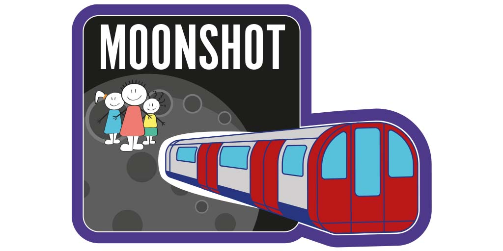

The children of Coopers Lane Primary School will go on an epic space race to the moon. Which class will reach the moon first? And will the children beat the teachers?

The students will fuel their tube train space ship with active travel hours. Here's how to take part:
We will add up all the journeys each week to see how far each class has traveled. Our mini astronauts have 4 weeks to reach the moon and the leaderboard results will be released weekly.
Have fun, get active and win some awesome prizes whilst raising vital funds for our amazing school. All monies raised will be used to support our fabulous new school library.
We'll be tracking our active travel using the free Strava app. Please see the video instructions below for how to set it up, secure your account and join our group. If you prefer text instructions, click here.
We will update the Moonshot leaderboard once every week so you can see how far each class has traveled. To receive the results, please enter your email address below to receive email updates from the PTA.
After filling in the form you will receive a confirmation email.
Once you've set up the Strava app and signed up for updates, you're all set to record your active travel and help us on our trip to the moon.
Here are some tips on how to make sure you get the best results from the Moonshot:
For the full rules of the Moonshot competition, click here.
Don't forget to ask friends and family to sponsor your journey to the moon. All monies raised from sponsorship or donations are managed by the PTA, a registered charity, and will be put towards the school's new library.
You can make a one-off donation here, or a recurring monthly donation here. And here's the sponsorship link to share: https://gofund.me/a7efc37f.
If you need any help, please do contact the PTA on info-pta@cooperslane.org.
Click here to go back